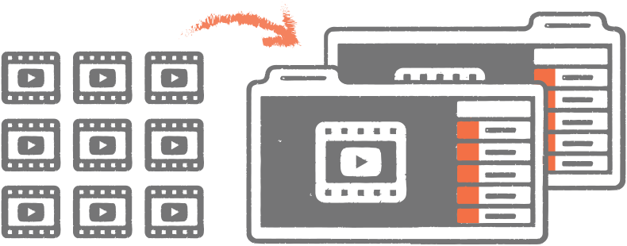

<section>
  <div class="container">
    <div class="row">
      <div class="col-md-12">
        <h2><em>How can we organize and showcase our most engaging videos refuting ISIS recruitment narratives?</em></h2>
        
        <h1>What did we do?</h1>
        <p>We needed to organize the best online videos from the research into <a href="#">“Playlists”</a> that can live on YouTube <a href="">“Channels”</a> The ordering of the videos within each playlist reflected an intended storyline.</p>
        <h1>What did we learn?</h1>
        <p>There is plenty of existing and relevant video available online to support projects aiming to tackle online radicalization: X videos were watched for 475,603 minutes by Y individuals as a result of the campaign.</p>
        <p>The profiles of the curated content differed by language: While there was roughly equal amounts of Arabic and English religious content, the Arabic content tended to be more technical in nature.</p>
        <ul>
          <li>There is more English-language documentary material than Arabic, and</li>
          <li>There is a lot of defector material in both English and Arabic.</li>
          <li>The most evocative citizen journalism videos are in Arabic — and this was a relatively underpopulated category</li>
        </ul>
      </div>
    </div>
  </div>
</section>